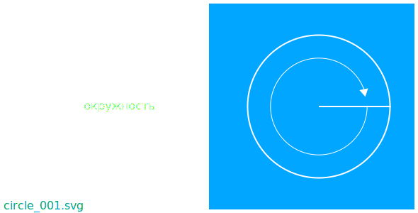
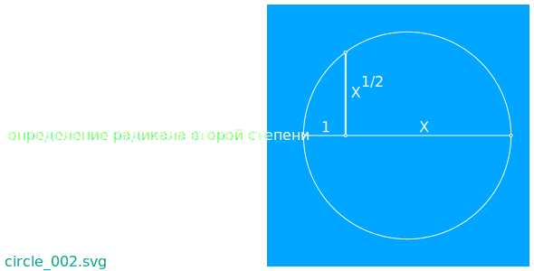
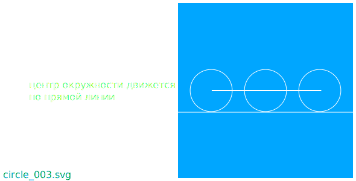

Окружность удобно наблюдать используя поворот отрезка вокруг начала отрезка.
Так конец отрезка рисует окружность.

Окружность самая удобная форма элипса используемая в производстве.
Окружность возможно использовать для определения образа радикала второй степени из отрезка.

Свойства окружности удобно использовать для контролируемого относительного перемещения нескольких взаимодействующих достаточно упругих структур.
При обкатывании окружности вдоль прямой линии центр окружности двигается по прямой линии.

Автомобильные шины на дороге двигаются похожим образом.
Оси автомобильных колес на которые установлены автомобильные шины могут двигаться по траектории близкой к прямой линии на дороге с небольшими неровностями.
Верно подобраные свойства материалов, из которых изготавливают автомобильные шины, дают возможность оказывать влияние на нежелательные процесы.
Появляется возможность, используя передовые автомобильные шины, снижать вибрацию, в процесе преодоления неровностей.
Появляется возможность увеличивать активную безопасность, повышая управляемость автомобиля, используя автомобильные шины с большей энергией, необходимой для начала проскальзывания автомобильной шины.
Современые автомобильные шины снижают вредное воздействие на экологию.
Автомобильные шины выполненые по современым технологиям обладают пониженым шумовым загрязнением.
Высокотехнологичные автомобильные шины имеют увеличеный срок службы.
Автомобильные шины с увеличеным сроком службы увеличивают время до появления на свалках автомбильных шин подлежащих утилизации.
Современые автомобильные шины могут быть более полно использованы во вторичном производстве.
Автомобильные шины переработаные по современым технологиям вторичной переработки могут частично использоваться в качестве расходного материала для производства новых качественых автомобильных шин.
Современые технологии позволяют использовать переработаные автомобильные шины в качестве расходного материала для производства дорожного полотна с повышеными водооталкивающими свойствами и улучшеными характеристиками сцепления с автомобильной шиной.